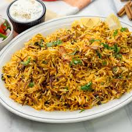

2 tablespoons of saffron milk (a pinch of saffron soaked in 2 tbsp warm milk)
2 tablespoons of ghee (clarified butter)
2 tablespoons of oil

Instructions
1. Marinate the Chicken:
In a large bowl, mix all the ingredients for the marinade.
Add the chicken pieces, ensuring they are well-coated with the marinade. Cover and refrigerate for at least 2 hours, preferably overnight.
2. Cook the Rice:
Bring water to a boil in a large pot. Add the spices (cardamom, cloves, cinnamon, bay leaf) and salt.
Add the soaked basmati rice and cook until it's 70-80% cooked (the grains should still be firm). Drain and set aside.
3. Layer the Biryani
In a heavy-bottomed pot or a biryani handi, spread a layer of the marinated chicken at the bottom.
Layer the partially cooked rice over the chicken evenly.
Drizzle the saffron milk, ghee, and oil over the rice.
Sprinkle fried onions, cilantro, and mint leaves on top.
4. Dum Cooking (Sealing and Steaming)
Cover the pot with a tight-fitting lid. If the lid is loose, seal it with dough to trap the steam.
Place the pot on medium heat for 10 minutes, then lower the heat and cook for another 25-30 minutes. This allows the chicken to cook fully and the flavors to meld.
Alternatively, place a tawa (flat griddle) under the pot to prevent burning.
5. Serve
Once done, gently fluff the biryani to mix the layers without breaking the rice grains.
Serve hot with raita, boiled eggs, or salan (Hyderabadi curry).